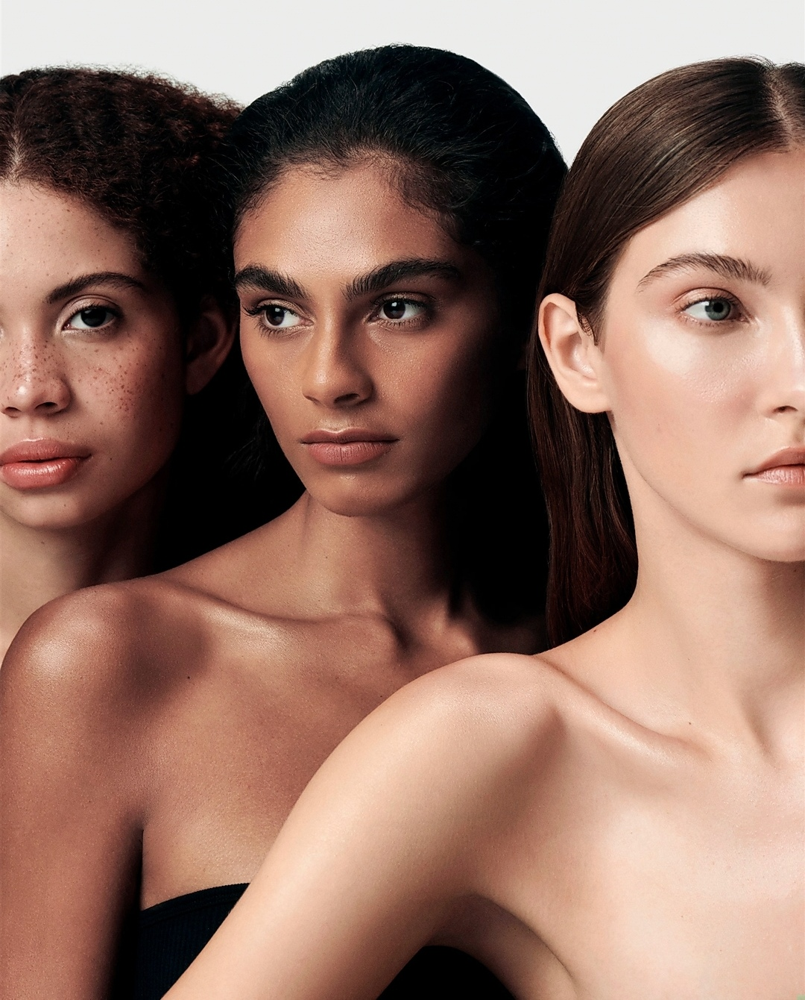

|  |
Un poco de nosotros
- Desde las tendencias hasta nuestros influencers favoritos, nuestras colecciones están inspiradas por todos los clientes que están alrededor de nosotros y nuestras vidas. Desarrollado exclusivamente por un grupo de talentosos creadores, Sanz Beauty tiene productos para todos nuestros clientes sin importar dónde vivan o cuál es su estilo de maquillaje, desde un look deslumbrante hasta un día de maquillaje natural, conocemos a nuestro público y queremos adaptarnos a cada uno de ellos, así que tengan por seguro que siempre estaremos creando algo más novedoso y mejor para ustedes
|